Shader Graph can help you create customized UI effects, including animated backgrounds and unique UI elements. With Shader Graph, you can transform Image elements from static to dynamic and easily define your own button state appearances. Shader Graph can also provide you with more control over the appearance of your UI and help you optimize performance and texture memory.
Here are some examples of what you can achieve with Shader Graph in uGUI (Unity UI):
- Create custom backgrounds for your user interfaces that subtly swirl, flow, or drift.
- Define visual button states, such as mouse hover and mouse press, or unfocused with just a single grayscale image.
- Design animated HUD elements that indicate the passage of time.
The Basics
To create a Shader Graph shader for a Canvas UI element, use one of the following methods:
- Modify an existing Shader Graph:
- Open the Shader Graph in the Shader Editor.
- In Graph Settings, select the HDRP Target. If there isn't one, go to Active Targets > Plus, and select HDRP.
- In the Material drop-down, select Canvas.
- Create a new Shader Graph. Go to Assets > Create > Shader Graph > HDRP, and select Canvas Shader Graph.
Create animated backgrounds
Follow these steps to create a simple animated background for a user interface.
Add two Sample Texture 2D nodes to the graph and set them to use a tiling clouds texture. We will scroll these in different directions speeds.
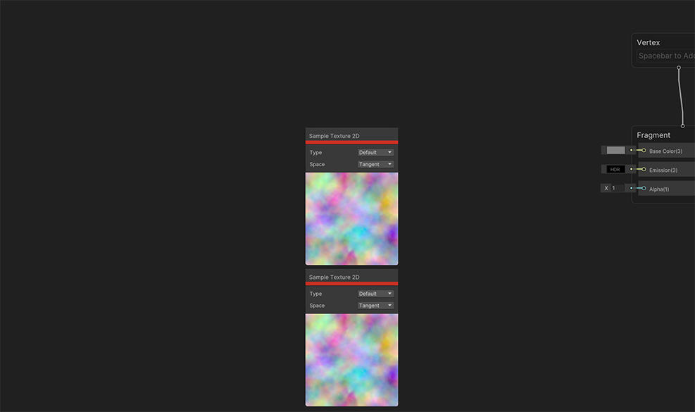
For each of the Sample Texture 2D nodes, add a Tiling and Offset node and connect it to the UV input port of the Sample Texture 2D node. We will use the Offset input ports to add the scrolling.
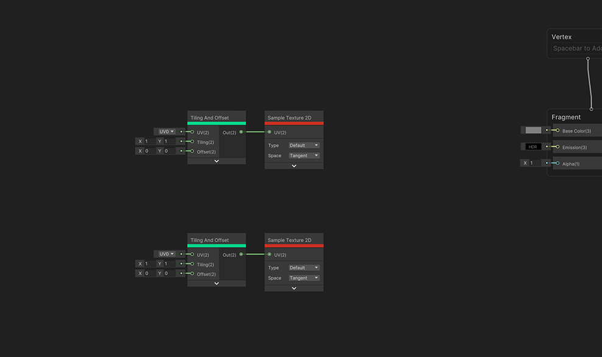
For each of the Tiling and Offset nodes, create a multiply node and connect it to the Offset input port.
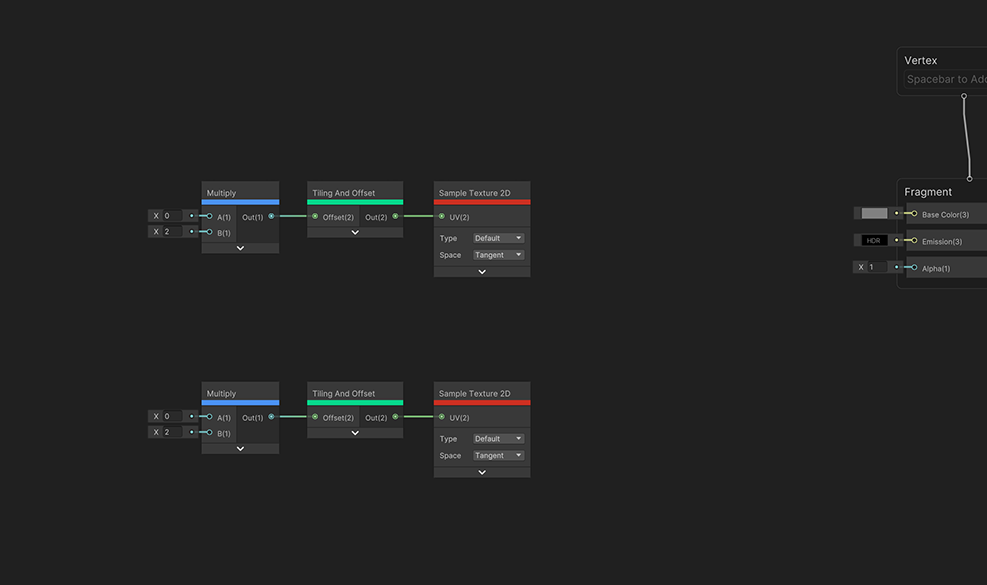
For the first Multiply node, create a Vector 2 node connected to the A input port and set it to
0.2and0.13. For the second Multiply node, create a Vector 2 node connected to the B input port and set it to-0.1and0.23. These values control the scrolling directions.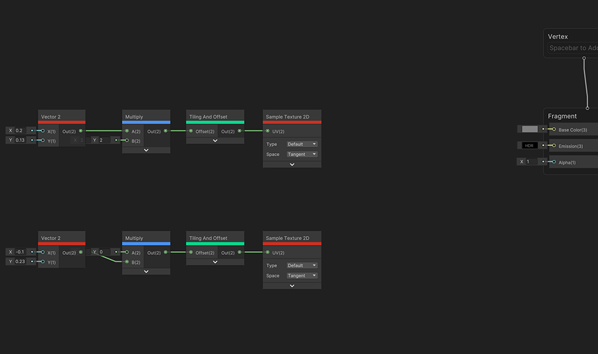
Create a Time node and multiply the Time output value by
0.3. This value is used to adjust the speed of the effect.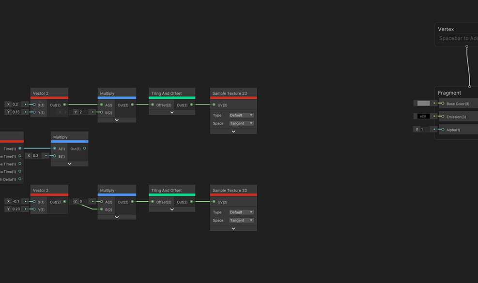
Connect the ouput port of the Time multiply node to the other two multiply nodes. Now our textures are scrolling.
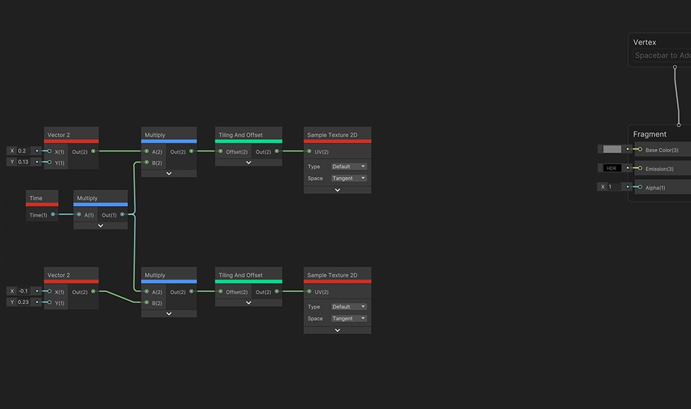
Create a new Blend node and use it to blend the outputs of the two Sample Texture 2D nodes. This will combine the contributions of both textures together.
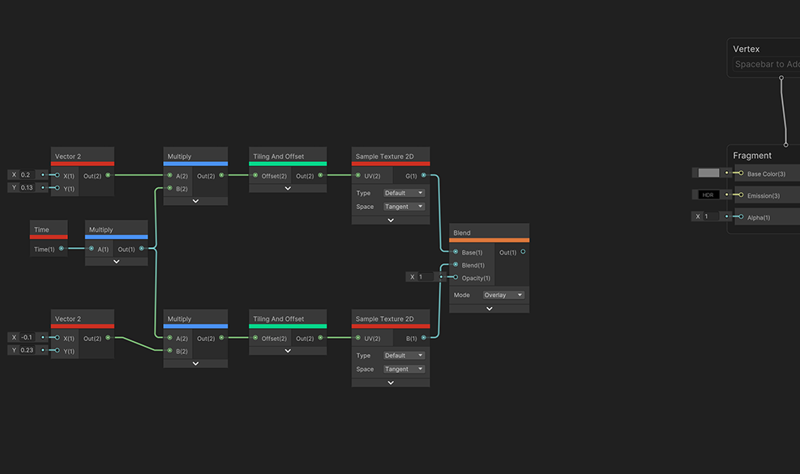
Add a Lerp node and wire the output of the Blend node to the T input of the Lerp. This uses the texture contributions as a mask for blending.
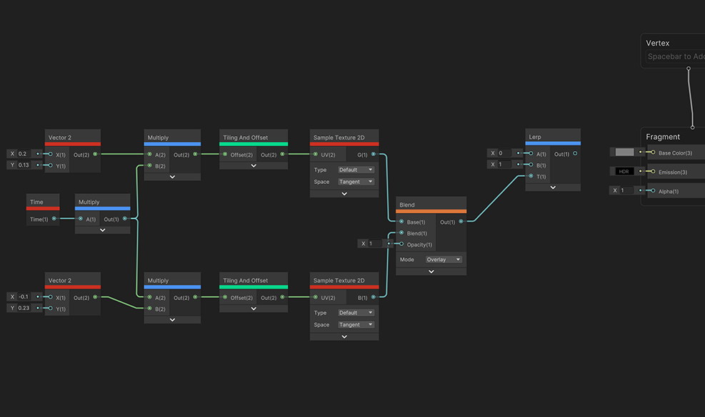
To blend the two colors using the animated mask, create two Color nodes and connect them to the A and B inputs of the Lerp. Set the colors according to your preference.
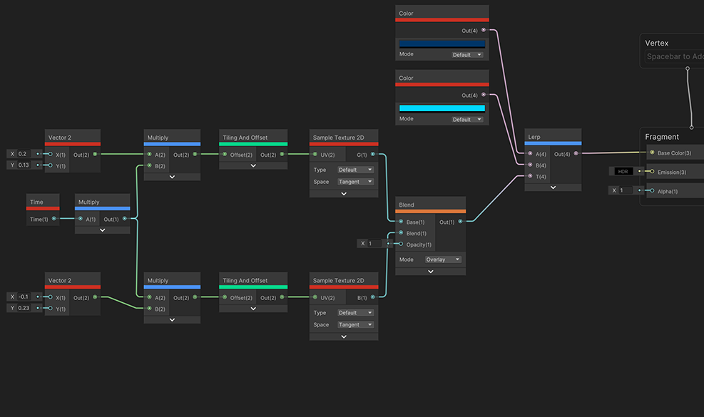
Finally, connect the output of the Lerp to the Base Color input on the Fragment Context Block.
You now have an animated background shader. You can customize it by changing the colors, changing the texture being used, or controlling the speed.
Apply the shader to a Canvas element
Follow the steps below to apply the shader you created to a Canvas UI element.
Right-click your Shader Graph asset in the Project window and select Create > Material. Give your material a name.
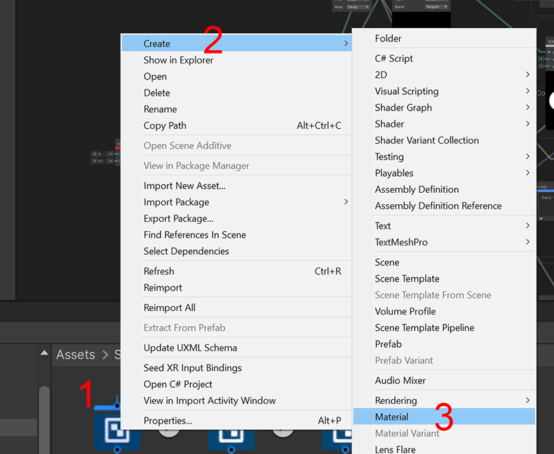
Ensure that your scene has a Canvas element. If it doesn't, right-click in the Hierarchy panel and select UI (Canvas)> Canvas.
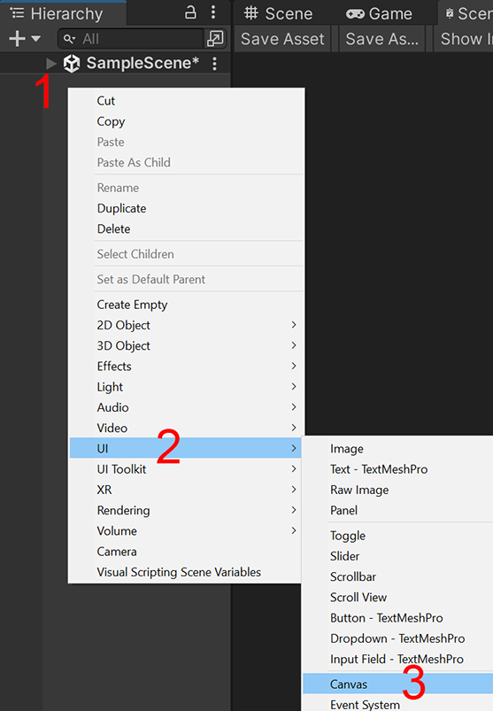
Add a new Image element to your Canvas. Right-click the Canvas element and select UI > Image.
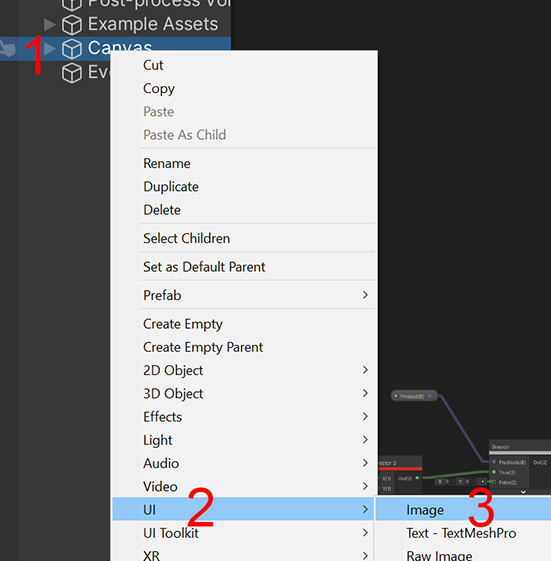
Select the Image element in the Hierarchy panel. In the Inspector window, select Browse on the Material slot.
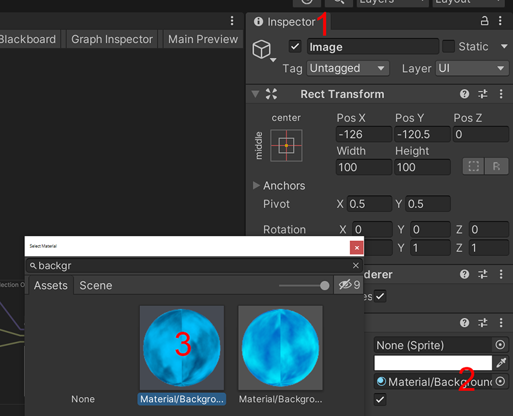
Select the Material asset you created in step 1.
Now your Canvas element is using the shader you created.
Pass custom data into the shader
It's possible to retrieve custom data in a Shader Graph shader, such as the width and height dimensions of Canvas Image elements. You can easily achieve this using a script by following the steps below:
Follow the steps in Apply The Shader To A Canvas Element to create a material and apply it to a Canvas Image element.
To access the Blackboard window, open the Shader Graph asset and then select Blackboard on the top right.
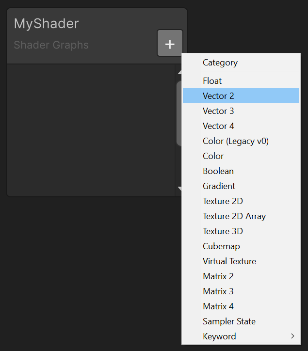
In the Blackboard window, click + on the top right to add a new Blackboard parameter.
Select the data type that matches the type of data you want to bring in. In this example, add a Vector 2 parameter.
Name the new parameter "Size". You can then drag the Size parameter into the graph and use it based on your needs.
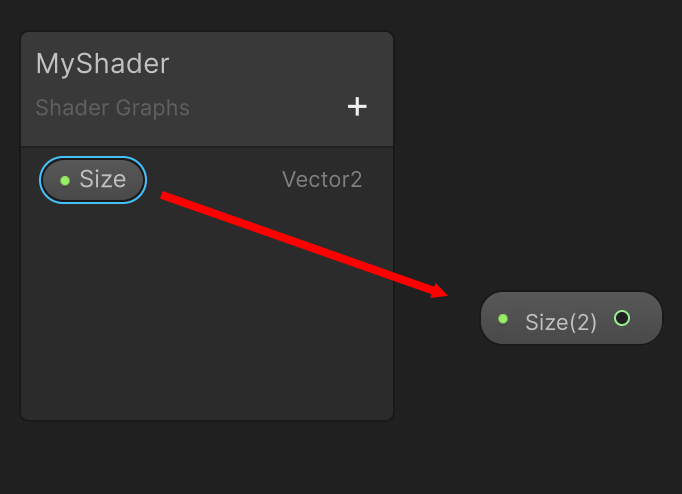
Create the following script to connect the Canvas Image's Width and Height values to the shader's Size parameter:
using UnityEngine;
using UnityEngine.UI;
[RequireComponent(typeof(Graphic))]
[ExecuteAlways]
public class ImageSize : MonoBehaviour
{
private Image m_myCanvasImage;
private void Start()
{
m_myCanvasImage = GetComponent<Image>();
}
#if UNITY_EDITOR
void OnValidate() { UpdateMaterial(); }
#endif
private void FixedUpdate()
{
UpdateMaterial();
}
void UpdateMaterial()
{
if (m_myCanvasImage != null && m_myCanvasImage.material != null)
{
var imageRect = m_myCanvasImage.rectTransform.rect;
var widthHeight = new Vector2(x: imageRect.width, y: imageRect.height);
m_myCanvasImage.material.SetVector(name: "_Size", widthHeight);
}
}
}
- Save the script as
ImageSize.csand add it to your project. - Select the Image element in the Hierarchy panel of your scene.
- In the Inspector window, select Add Component and then choose Scripts > Image Size.
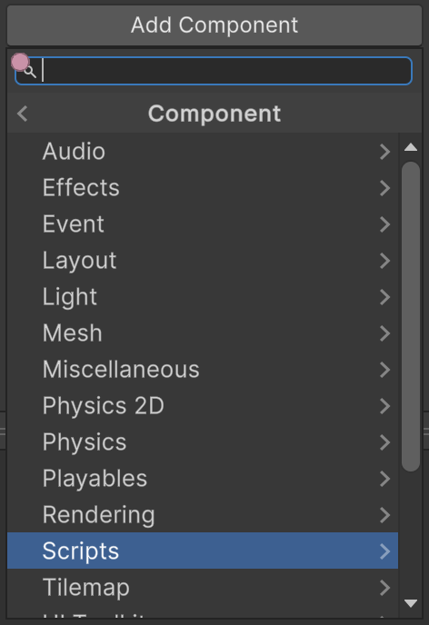
The Image element's Width and Height values from the Rect Transform are passed into the Material's Size parameter. You can now use them in the shader.